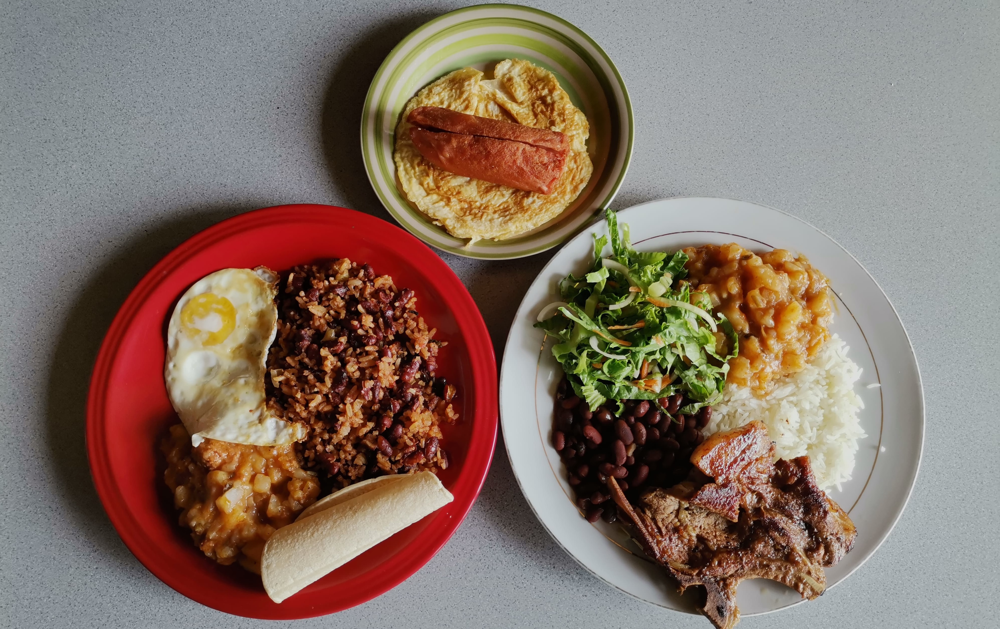

Conózcanos
En Soda La Uruca, se come de pie y se come riquísimo.
Vení a probarlo todo, desde nuestro famoso "gallo de salchichón con torta de huevo" hasta el tradicional "casado" con la infaltable chilera de la casa, cada elección en nuestro menú es un placer para el paladar.

Nuestra historia
Hace casi seis décadas, en el corazón del barrio de La Uruca, en las afueras de San José, Costa Rica, una mujer apasionada por la cocina costarricense y sus sabores auténticos decidió emprender una aventura culinaria que dejaría una huella imborrable en la comunidad. Esta mujer valiente y conocida como Doña Haydeé se convertiría en la fundadora de un lugar icónico: "Soda La Uruca.”
Doña Haydeé era renombrada en su vecindario por sus dotes culinarios, especialmente por sus recetas secretas de la tradicional comida costarricense. Un día, inspirada por el deseo de compartir su amor por la comida típica, decidió abrir las puertas de su soda en 1964. Así nació "Soda La Uruca.”
Desde el principio, Soda La Uruca se destacó por servir auténtica comida costarricense, preparada con ingredientes frescos y recetas transmitidas de generación en generación. Sin embargo, lo que realmente se convirtió en el sello distintivo de la soda y su mayor orgullo fue el "gallo de salchichón con torta de huevo”.
El "gallo de salchichón con torta de huevo" de Soda La Uruca se volvió una sensación en la comunidad. Era un platillo que representaba la esencia misma de la comida costarricense: sabroso, casero y lleno de tradición. La torta de huevo, hecha con huevos frescos y sazonada con ingredientes secretos de la familia, combinada con el delicioso salchichón, servido en un pan recién horneado, era una experiencia culinaria única que atraía a comensales de todas partes.
A medida que los años avanzaron, la fama de Soda La Uruca y su icónico "gallo de salchichón con torta de huevo" se extendió más allá de La Uruca y se convirtió en un destino gastronómico de renombre en todo Costa Rica. La receta secreta y la pasión de Doña Haydeé fueron transmitidas a sus nietos, quienes se encargaron de mantener la tradición viva.
Hoy en día, Soda La Uruca continúa sirviendo el "gallo de salchichón con torta de huevo" tal como lo hacía Doña Haydeé en sus comienzos. Es un lugar querido por los costarricenses y los visitantes que buscan degustar un pedazo de la auténtica cocina costarricense y experimentar la calidez y el ambiente familiar que han sido una parte fundamental de la historia de la soda desde 1964. La tradición sigue siendo fuerte, y el "gallo de salchichón con torta de huevo" es un tesoro gastronómico que representa la riqueza de la comida tradicional costarricense.